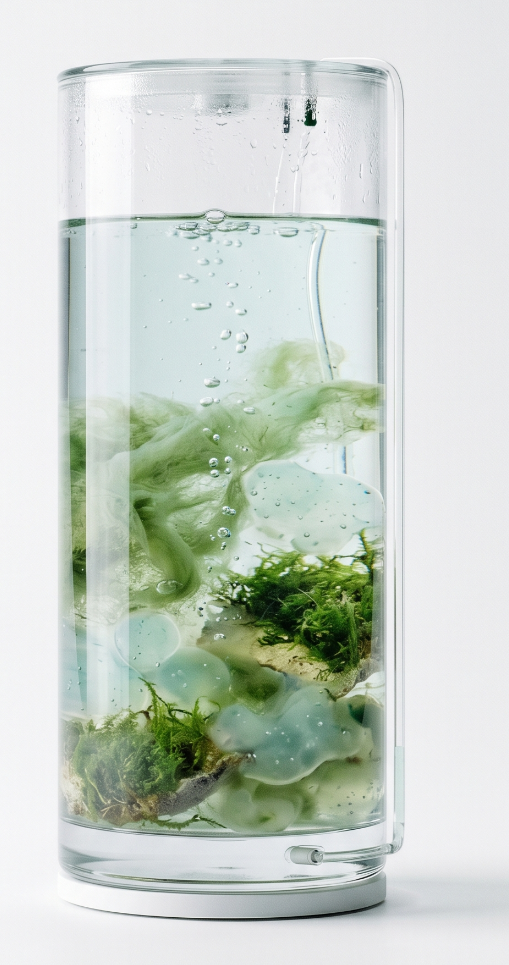

1. Introduction to Sleep Island
Sleep Island imagines rest as metabolism. Human sleep pressure gently activates micro-pumps, regulating mist and water circulation so microscopic life can gather, root, and glow.
2. Real-time Ecological System Simulation
Hover particles to inspect living nodes.
3. Observable Algae Tank / Device Link
The vessel below can bind to your physical sensing device. Incoming telemetry updates the ecosystem state in real time, making internal micro-life shifts observable.

Device status: waiting for connection.
4. Human Pressure → Ecosystem Transformation
Increasing pressure amplifies pump pulses, thickens moisture layers, and feeds filament growth. Calm sleep gives continuity; restless waves trigger oxygen release.
5. Algae / Moss / Mycelium Growth Status
Algae Bloom
67% vitality
Moss Weave
53% hydration lock
Mycelium Thread
49% connective growth
6. Oxygen Release & Humidity Drift
Emotional agitation in dream phases initiates protective oxygen plumes. Moisture condenses as soft fog, distributing nutrients through capillary channels.
7. Sleep Breathing Synchronization
“Inhale, and the tank listens. Exhale, and bioluminescent life exhales with you.”
8. Planetary Sleep Network Concept
Multiple Sleep Islands could form a distributed nocturnal commons: city-scale dormancy converted into planetary micro-ecological resilience.
9. Speculative Future Narrative
Tomorrow, sleep is no longer passive recovery. It is an ecological ritual: post-human care, shared respiration, and living architecture grown from dreams.